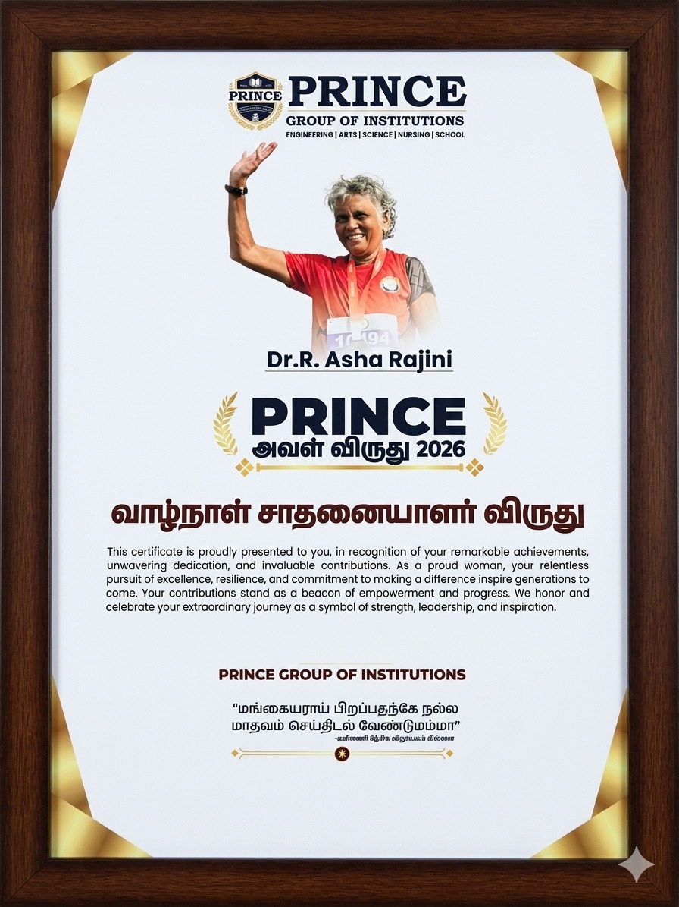

Dr. R. Asha Rajini was conferred the Prince Award 2026 by the Prince Group of Institutions, recognising her achievements and sustained commitment to an active life.
The recognition adds another milestone to Dr. Asha Rajini’s journey of fitness, perseverance and personal achievement. Her continued participation in physical activities reflects the value of maintaining an active lifestyle and pursuing personal goals beyond professional life.

Her achievement is particularly relevant to the spirit of “Athletes Are Made, Not Born,” demonstrating how commitment, regular effort and perseverance can help sustain an active life across the years.
TTPA congratulates Dr. R. Asha Rajini on receiving the Prince Award 2026 and wishes her continued success in her future pursuits.